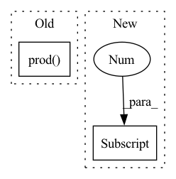

Pattern ID :40772
Before Change
h = torch.sigmoid(h)
if mask is not None:
rgbs = torch.zeros(np.prod( prefix) , 3, dtype=h.dtype, device=h.device) // [N, 3]
rgbs[mask] = h
else:
rgbs = hAfter Change
//starter.record()
if mask is not None:
rgbs = torch.zeros(mask.shape[0] , 3, dtype=x.dtype, device=x.device) // [N, 3]
// in case of empty mask
if not mask.any():
return rgbsIn pattern: SUPERPATTERN
Frequency: 6
Non-data size: 2
Instances Fragment ID: 115177388
Project Name: ashawkey/torch-ngp
Commit Name: dd4378cc9d1a490fbe6b81e54316291ca6eb5412
Time: 2022-03-27
Author: ashawkey1999@gmail.com
File Name: nerf/network_ff.py
M Class Name: NeRFNetwork
N Class Name: NeRFNetwork
M Method Name: color(5)
N Method Name: color(5)
M Parent Class: NeRFRenderer
N Parent Class: NeRFRenderer
M File Name: nerf/network_ff.py
N File Name: nerf/network_ff.py
M Start Line: 96
M End Line: 112
N Start Line: 99
N End Line: 127
Before Change
x_max = np.max(true_verts[:,t+1,:], axis=0)
x_range = x_max-x_min
true_area = np.prod( x_range)
// true_hull = ConvexHull(true_verts[:, t+1, :])
// true_area = true_hull.volume
After Change
errors.append((estimated_area - true_area) / true_area)
elif isinstance(target_set, constraints.RotatedLpConstraint):
true_verts_reversed = self.dynamics.get_true_backprojection_set(
backreachable_sets[-1] , target_set,
t_max, controller=propagator.network,
num_samples=1e8
) Fragment ID: 115177384
Project Name: mit-acl/nn_robustness_analysis
Commit Name: b7a8819901416af543775010a3817dc7675efd68
Time: 2022-08-12
Author: nrober1122@gmail.com
File Name: nn_closed_loop/nn_closed_loop/partitioners/ClosedLoopPartitioner.py
M Class Name: ClosedLoopPartitioner
N Class Name: ClosedLoopPartitioner
M Method Name: get_backprojection_error(6)
N Method Name: get_backprojection_error(5)
M Parent Class: partitioners.Partitioner
N Parent Class: partitioners.Partitioner
M File Name: nn_closed_loop/nn_closed_loop/partitioners/ClosedLoopPartitioner.py
N File Name: nn_closed_loop/nn_closed_loop/partitioners/ClosedLoopPartitioner.py
M Start Line: 333
M End Line: 392
N Start Line: 338
N End Line: 435
Before Change
)
def forward(self, x):
out = self.layers(x.reshape(-1, np.prod( self.discriminator_input_dim) ))
output = ModelOutput(adversarial_cost=out)
After Change
else:
max_depth = max(output_layer_levels)
out = z.reshape(z.shape[0] , -1)
for i in range(max_depth):
out = self.layers[i](out) Fragment ID: 115177387
Project Name: clementchadebec/benchmark_vae
Commit Name: 85a39bf500137e20365883af8964b4e22d655fe0
Time: 2022-01-17
Author: 47564971+clementchadebec@users.noreply.github.com
File Name: src/pythae/models/nn/default_architectures.py
M Class Name: Discriminator_MLP
N Class Name: Discriminator_MLP
M Method Name: forward(3)
N Method Name: forward(2)
M Parent Class: BaseDiscriminator
N Parent Class: BaseDiscriminator
M File Name: src/pythae/models/nn/default_architectures.py
N File Name: src/pythae/models/nn/default_architectures.py
M Start Line: 126
M End Line: 127
N Start Line: 238
N End Line: 273
Before Change
if derivative == 0:
return fast_power(xyz, k, mask0, mask2).prod( -1)
elif derivative == 1:
km1 = k-1After Change
output.append(fns[d]())
if len(derivative) == 1:
return output[0]
else:
return output
Fragment ID: 115177386
Project Name: nlesc-jcer/qmctorch
Commit Name: eb279d7d1838b1b81fc21cdc728e62ffdf10e29d
Time: 2020-06-04
Author: nicolas.gm.renaud@gmail.com
File Name: qmctorch/wavefunction/spherical_harmonics.py
M Class Name: AnonimousClass
N Class Name: AnonimousClass
M Method Name: CartesianHarmonics(6)
N Method Name: CartesianHarmonics(6)
M Parent Class:
N Parent Class:
M File Name: qmctorch/wavefunction/spherical_harmonics.py
N File Name: qmctorch/wavefunction/spherical_harmonics.py
M Start Line: 110
M End Line: 151
N Start Line: 148
N End Line: 163
Before Change
nn.Sigmoid())
def forward(self, x):
out = self.layers(x.reshape(-1, np.prod( self.discriminator_input_dim) ))
output = ModelOutput(adversarial_cost=out)
After Change
else:
max_depth = max(output_layer_levels)
out = z.reshape(z.shape[0] , -1)
for i in range(max_depth):
out = self.layers[i](out) Fragment ID: 115177383
Project Name: clementchadebec/benchmark_vae
Commit Name: 85a39bf500137e20365883af8964b4e22d655fe0
Time: 2022-01-17
Author: 47564971+clementchadebec@users.noreply.github.com
File Name: tests/data/custom_architectures.py
M Class Name: Discriminator_MLP_Custom
N Class Name: Discriminator_MLP_Custom
M Method Name: forward(3)
N Method Name: forward(2)
M Parent Class: BaseDiscriminator
N Parent Class: BaseDiscriminator
M File Name: tests/data/custom_architectures.py
N File Name: tests/data/custom_architectures.py
M Start Line: 234
M End Line: 237
N Start Line: 378
N End Line: 407
Before Change
if derivative == 0:
return fast_power(xyz, k, mask0, mask2).prod( -1)
elif derivative == 1:
km1 = k-1After Change
output.append(fns[d]())
if len(derivative) == 1:
return output[0]
else:
return output
Fragment ID: 115177382
Project Name: nlesc-jcer/qmctorch
Commit Name: d244fdd3192ef812f2eb5120e38efe9614cabd82
Time: 2020-06-04
Author: nicolas.gm.renaud@gmail.com
File Name: qmctorch/wavefunction/spherical_harmonics.py
M Class Name: AnonimousClass
N Class Name: AnonimousClass
M Method Name: CartesianHarmonics(6)
N Method Name: CartesianHarmonics(6)
M Parent Class:
N Parent Class:
M File Name: qmctorch/wavefunction/spherical_harmonics.py
N File Name: qmctorch/wavefunction/spherical_harmonics.py
M Start Line: 110
M End Line: 149
N Start Line: 110
N End Line: 166